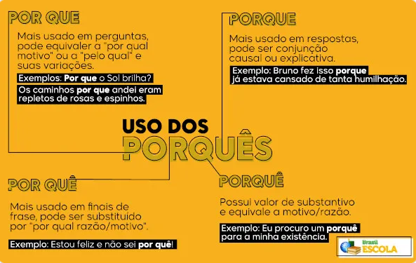

Por que: Utilizado em perguntas. Exemplo: "Por que não voltamos para casa?"
Porque: Utilizado em respostas. Exemplo: "Porque agora não temos tempo."
Por quê: Utilizado no fim das frases. Exemplo: "Você não gosta dessa matéria, por quê?"
Porquê: Possui valor de substantivo e indica motivo ou razão. Exemplo: "Queria entender o porquê de isto estar havendo."
Aprenda mais sobre os porquês acessando o link abaixo:
